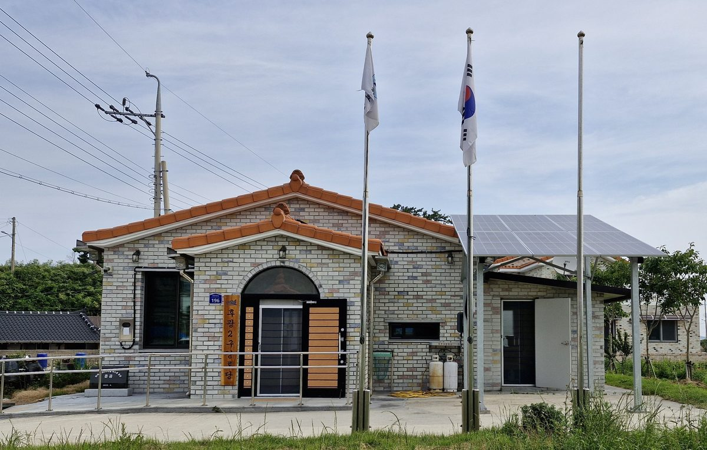

공공기관에 재생에너지 발전 목표 매긴다…기후부, 직접 설치 용량과 발전사업자에 내줄 유휴부지 두 갈래로 도입 추진

RPS 2027년 1월 폐지 뒤 상반기 첫 경쟁입찰 전 시행 계획…한국도로공사·코레일처럼 발전사업 못 하는 기관도 대상, 공공기관·지방공기업 유휴부지 전수조사부터
기후에너지환경부가 지방공기업을 포함한 공공기관에 재생에너지 발전 목표를 부과하는 '공공기관 재생에너지 목표 관리제' 도입을 추진하고 있다. 25일 기후부와 한국에너지공단 설명에 따르면 목표는 기관이 직접 설치할 재생에너지 설비 용량과, 재생에너지 발전사업자에게 제공할 유휴부지 규모 두 가지로 나뉘어 세워진다. 부지 기준을 따로 두는 것은 발전공기업과 달리 스스로 발전사업을 할 수 없는 기관에도 목표를 매기기 위해서로, 한국도로공사와 한국철도공사(코레일) 등이 대표적인 대상으로 꼽힌다. 기후부는 먼저 공공기관과 지방공기업의 유휴부지를 전수 조사해 재생에너지 발전 잠재량을 파악할 계획이며, 기후부 관계자는 내년 1월 1일 재생에너지 공급 의무화 제도(RPS)가 폐지된 뒤 상반기 중 경쟁입찰이 열리기 전에 목표 관리제를 도입하겠다고 밝혔다. RPS는 500MW 이상 발전설비를 가진 발전사업자에게 일정 비율을 재생에너지로 공급하게 한 제도지만, 의무사업자들이 설비를 늘리기보다 공급인증서(REC)를 사서 의무를 채우는 일이 잦아 폐지가 결정됐다. 정부는 2030년까지 재생에너지 설비를 100GW 이상으로 늘리고, 올해 공공기관 경영평가에 K-RE100 가입·이행 실적을 넣어 현재 평균 14%인 공공기관 재생에너지 사용률을 2030년 60%까지 끌어올린다는 목표를 세워 두고 있다.
시민에너지 관점
공공기관 재생에너지 사용률을 평균 14%에서 2030년 60%로 끌어올리려면 도로·철도 주변 같은 공공 유휴부지가 가장 먼저 쓰일 자원이 된다. 땅을 사업자에게 빌려주는 방식이 빠르다는 반론이 나올 수 있지만, 공공의 땅에서 나온 발전 수익이 외부 사업자에게만 돌아가면 주민 반발을 사고 사업이 오히려 늦어질 수 있다. 덴마크가 2009년부터 2020년까지 새 풍력 사업 지분의 20% 이상을 지역 주민에게 먼저 내놓도록 의무화했듯, 공공 자산은 그 지역 시민과 주민이 출자해 주인이 되는 발전소에 먼저 열려야 수익이 지역에 남고 수용성도 높아진다. 기후부는 제도를 설계하는 지금, 유휴부지 제공 기준에 시민·주민 소유 발전사업 우선 배정부터 넣어야 한다.
출처: 연합뉴스 2026-10-25 이재영 원문 보기
公共機関に再エネ発電目標を課す…韓国気候エネルギー環境部、自ら設置する容量と発電事業者に提供する遊休地の二本立てで導入を推進
RPSが2027年1月に廃止された後、上半期の初の競争入札前に施行する計画…韓国道路公社・韓国鉄道公社など発電事業ができない機関も対象、公共機関・地方公企業の遊休地を全数調査
韓国の気候エネルギー環境部が、地方公企業を含む公共機関に再生可能エネルギーの発電目標を課す「公共機関再生可能エネルギー目標管理制」の導入を進めている。25日の同部と韓国エネルギー公団の説明によると、目標は機関が自ら設置する再エネ設備の容量と、再エネ発電事業者に提供する遊休地の規模の2つに分けて定められる。遊休地の基準を別に設けるのは、発電公企業と違って自ら発電事業を営めない機関にも目標を課すためで、韓国道路公社や韓国鉄道公社（KORAIL）などが代表的な対象に挙げられている。同部はまず公共機関と地方公企業の遊休地を全数調査して再エネの発電ポテンシャルを把握する計画で、同部関係者は、来年1月1日に再生可能エネルギー供給義務化制度（RPS）が廃止された後、上半期中に競争入札が行われる前に目標管理制を導入すると明らかにした。RPSは500MW以上の発電設備を持つ発電事業者に一定割合を再エネで供給させる制度だが、義務事業者が設備を増やすより供給認証書（REC）を買って義務を満たす例が多く、廃止が決まった。政府は2030年までに再エネ設備を100GW以上に増やし、今年から公共機関の経営評価にK-RE100への加入・履行実績を加えて、現在平均14%の公共機関の再エネ使用率を2030年に60%まで高める目標を掲げている。
市民エネルギーの視点
公共機関の再エネ使用率を平均14%から2030年に60%へ引き上げるには、道路や鉄道沿いのような公共の遊休地が真っ先に使われる資源になる。土地を事業者に貸す方式のほうが早いという反論もありうるが、公共の土地から生まれた発電収益が外部の事業者だけに流れれば住民の反発を招き、かえって事業が遅れかねない。デンマークが2009年から2020年まで新規風力事業の持ち分の20%以上を地域住民に優先して提供するよう義務づけたように、公共資産はその地域の市民と住民が出資して持ち主となる発電所にまず開かれてこそ、収益が地域に残り受け入れも進む。気候エネルギー環境部は制度を設計している今こそ、遊休地提供の基準に市民・住民所有の発電事業への優先配分を盛り込むべきだ。
出典: Yonhap News Agency 2026-10-25 Lee Jae-young 原文を読む
韩国将为公共机构设定可再生能源发电目标…气候能源环境部拟分为自建装机容量和向发电企业提供闲置用地两部分
计划在RPS于2027年1月废止后、上半年首轮竞标前实施…韩国道路公社、韩国铁道公社等不能自营发电的机构也纳入对象，先全面普查公共机构和地方公企业闲置用地
韩国气候能源环境部正在推动引入"公共机构可再生能源目标管理制"，为包括地方公企业在内的公共机构设定可再生能源发电目标。据该部和韩国能源公团25日介绍，目标将分为两部分：机构自行建设的可再生能源设备容量，以及向可再生能源发电企业提供的闲置用地规模。之所以另设用地标准，是为了让发电公企业以外、无法自营发电业务的机构也承担目标，韩国道路公社和韩国铁道公社（KORAIL）等被视为典型对象。该部计划先对公共机构和地方公企业的闲置用地进行全面普查，摸清可再生能源发电潜力；一位相关人士表示，明年1月1日可再生能源配额制（RPS）废止后，上半年将举行竞争性招标，目标管理制将在此之前引入。RPS要求拥有500MW以上发电设备的企业以一定比例供应可再生能源，但义务企业往往购买供应证书（REC）履约而非扩建设备，因此决定废止。政府的目标是到2030年将可再生能源装机提高到100GW以上，并从今年起把加入和履行K-RE100的情况纳入公共机构经营评估，将公共机构目前平均14%的可再生能源使用率到2030年提高到60%。
市民能源视角
要把公共机构的可再生能源使用率从平均14%提高到2030年的60%，道路、铁路沿线等公共闲置用地将成为最先被利用的资源。有人会说把土地租给企业更快，但如果公共土地产生的发电收益只流向外部企业，就会招致居民反对，反而拖慢项目。丹麦在2009年至2020年间规定新建风电项目须把至少20%的股份优先向当地居民出售，同样，公共资产应首先向由当地市民和居民出资、成为主人的电站开放，收益才能留在地方，接受度也会提高。气候能源环境部应趁现在设计制度之际，在闲置用地提供标准中首先写入向市民和居民所有的发电项目优先分配的规定。
来源: Yonhap News Agency 2026-10-25 Lee Jae-young 查看原文
Korea moves to set renewable generation targets for public institutions, split between their own installations and idle land offered to power producers
Ministry plans to launch the scheme before the first competitive auction in the first half of 2027, after RPS ends on Jan. 1; agencies that cannot run power businesses, such as Korea Expressway Corp. and Korail, would be covered, starting with a full survey of idle public land
South Korea's Ministry of Climate, Energy and Environment is pushing to introduce a renewable energy target management system that would assign renewable generation targets to public institutions, including local public enterprises. According to the ministry and the Korea Energy Agency on the 25th, targets would be set in two forms: the renewable capacity an institution installs itself, and the amount of idle land it provides to renewable power producers. The land-based target is meant to cover institutions that, unlike the state power generation companies, cannot run a generation business themselves, with Korea Expressway Corporation and Korea Railroad Corporation (Korail) seen as typical examples. The ministry plans first to survey all idle land held by public institutions and local public enterprises to gauge renewable generation potential, and a ministry official said the scheme would be introduced before competitive auctions are held in the first half of next year, after the Renewable Portfolio Standard (RPS) is abolished on Jan. 1. The RPS required generators with 500 MW or more of capacity to supply a set share of renewable power, but obligated companies often met it by buying renewable energy certificates (RECs) rather than building plants, which led to its abolition. The government aims to expand renewable capacity to more than 100 GW by 2030, and this year added K-RE100 membership and performance to public institution evaluations, with the goal of raising their average renewable usage rate from 14% now to 60% by 2030.
Citizen Energy View
Raising public institutions' renewable usage from an average of 14% to 60% by 2030 will make idle public land along roads and railways one of the first resources to be tapped. Some will argue that leasing land to developers is faster, but if the revenue from power generated on public land flows only to outside companies, it can stir local opposition and end up slowing projects down. Just as Denmark required from 2009 to 2020 that at least 20% of shares in new wind projects be offered first to local residents, public assets should be opened first to plants that local citizens and residents invest in and own, so that revenue stays in the community and acceptance grows. While the ministry is still designing the scheme, it should write priority for citizen- and resident-owned projects into the rules for providing idle land.
Source: Yonhap News Agency 2026-10-25 Lee Jae-young Read the original